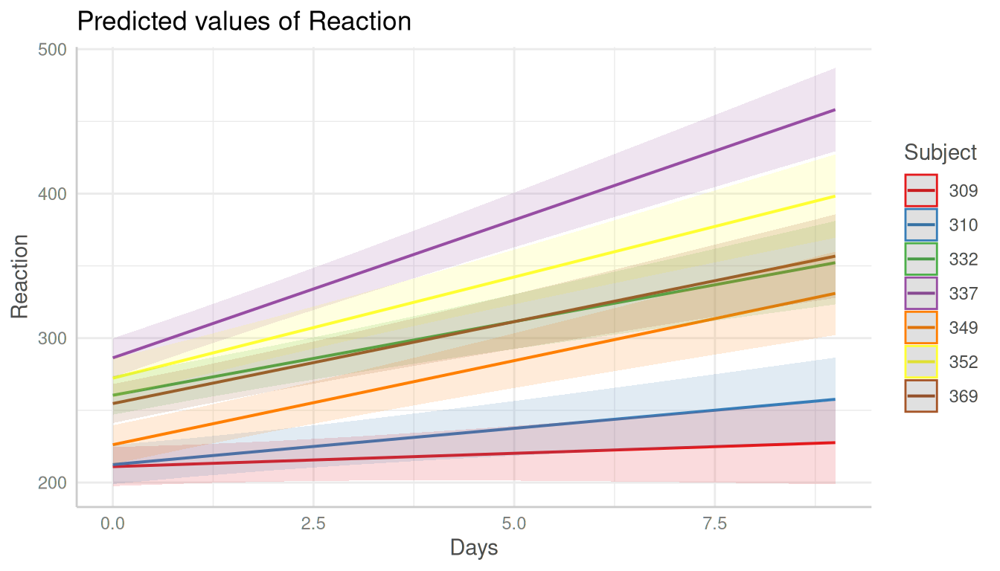
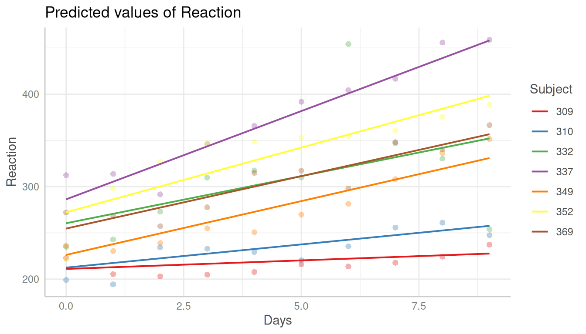

Introduction: Adjusted Predictions and Marginal Effects for Random Effects Models
Daniel Lüdecke
2024-01-30
Source:vignettes/introduction_randomeffects.Rmd
introduction_randomeffects.RmdThis vignette shows how to calculate adjusted predictions that take the random-effect variances for mixed models into account.
Population-level predictions for mixed effects models
Basically, the type of predictions, i.e. whether to account for the
uncertainty of random effects or not, can be set with the
type-argument. The default, type = "fixed",
means that predictions are on the population-level and do not account
for the random effect variances. Intervals are confidence
intervals for the predicted values.
library(ggeffects)
library(lme4)
data(sleepstudy)
m <- lmer(Reaction ~ Days + (1 + Days | Subject), data = sleepstudy)
pr <- ggpredict(m, "Days")
pr
#> # Predicted values of Reaction
#>
#> Days | Predicted | 95% CI
#> ---------------------------------
#> 0 | 251.41 | 237.94, 264.87
#> 1 | 261.87 | 248.48, 275.27
#> 2 | 272.34 | 258.34, 286.34
#> 3 | 282.81 | 267.60, 298.02
#> 5 | 303.74 | 284.83, 322.65
#> 6 | 314.21 | 293.03, 335.39
#> 7 | 324.68 | 301.05, 348.31
#> 9 | 345.61 | 316.74, 374.48
#>
#> Adjusted for:
#> * Subject = 0 (population-level)
plot(pr)
Prediction intervals
When type = "random", the predicted values are
still on the population-level, but conditioned on the
random-effect variances (individual level predictions), which means that
re.form = NULL when calling predict(). This
may affect the returned predicted values, depending on whether
REML = TRUE or REML = FALSE was used for model
fitting.
Furthermore, when type = "random", the random-effect
variances are taken into account, meaning that the intervals
are actually prediction intervals and become larger. More
technically speaking, type = "random" accounts for the
uncertainty of the fixed effects conditional on the estimates
of the random-effect variances and conditional modes (BLUPs).
Predicted values are not on the population-level when a
particular group (from the random effects) is specified in the
condition or terms arguments. See examples
below (section Unit-level predictions (predictions for each level of
random effects)) for details.
The random-effect variance is the mean random-effect
variance. Calculation is based on the proposal from Johnson et
al. 2014, which is also implemented in functions like performance::r2()
or insight::get_variance()
to get r-squared values or random-effect variances for mixed models with
more complex random effects structures.
As can be seen, compared to the previous example with
type = "fixed", predicted values are identical (both on the
population-level). However, standard errors, and thus the resulting
confidence (or prediction) intervals are much larger .
pr <- ggpredict(m, "Days", type = "random")
pr
#> # Predicted values of Reaction
#>
#> Days | Predicted | 95% CI
#> ---------------------------------
#> 0 | 251.41 | 199.13, 303.68
#> 1 | 261.87 | 209.62, 314.13
#> 2 | 272.34 | 219.92, 324.75
#> 3 | 282.81 | 230.06, 335.56
#> 5 | 303.74 | 249.81, 357.68
#> 6 | 314.21 | 259.44, 368.98
#> 7 | 324.68 | 268.91, 380.44
#> 9 | 345.61 | 287.43, 403.79
#>
#> Adjusted for:
#> * Subject = 0 (population-level)
plot(pr)
Conditional predictions at the population-level
The reason why both type = "fixed" and
type = "random" return predictions at population-level is
because ggpredict() returns predicted values of the
response at specific levels of given model predictors, which
are defined in the data frame that is passed to the
newdata-argument (of predict()). The data
frame requires data from all model terms, including random
effect terms. This again requires to choose certain levels or values
also for each random effect term, or to set those terms to zero or
NA (for population-level). Since there is no general rule,
which unit-level(s) (i.e. level(s) of random effect terms) to choose in
order to represent the random effects structure in the data, using the
population-level seems the most clear and consistent approach.
To get predicted values for a specific unit-level of the random
effect term, simply define this level in the
condition-argument.
ggpredict(m, "Days", type = "random", condition = c(Subject = 330))
#> # Predicted values of Reaction
#>
#> Days | Predicted | 95% CI
#> ---------------------------------
#> 0 | 275.10 | 222.82, 327.37
#> 1 | 280.75 | 228.49, 333.01
#> 2 | 286.40 | 233.99, 338.82
#> 3 | 292.05 | 239.30, 344.80
#> 5 | 303.36 | 249.43, 357.29
#> 6 | 309.01 | 254.24, 363.79
#> 7 | 314.67 | 258.90, 370.43
#> 9 | 325.97 | 267.79, 384.15Finally, it is possible to obtain predicted values by simulating from
the model, where predictions are based on simulate().
ggpredict(m, "Days", type = "simulate")
#> # Predicted values of Reaction
#>
#> Days | Predicted | 95% CI
#> ---------------------------------
#> 0 | 251.58 | 200.73, 301.26
#> 1 | 261.94 | 211.91, 312.24
#> 2 | 272.49 | 222.14, 322.05
#> 3 | 282.65 | 233.38, 331.37
#> 5 | 304.12 | 254.91, 353.61
#> 6 | 313.76 | 263.74, 363.98
#> 7 | 324.89 | 275.31, 374.50
#> 9 | 345.35 | 294.95, 395.19When are predictions affected by type = "fixed" and
type = "random"?
When type = "fixed", ggpredict() calls
predict(..., re.form = NA). For
type = "random", predict(..., re.form = NULL)
is called. This can lead to different predictions, depending on whether
REML = TRUE or REML = FALSE was used for model
fitting. When REML = FALSE, re.form = NA and
re.form = NULL are identical, and thus predictions are not
affected by type = "fixed" and
type = "random". However, when REML = TRUE,
re.form = NA and re.form = NULL can return
different predictions, also depending on whether factors are included in
the model or not. The following example shows a case where predictions
are affected by type = "fixed" and
type = "random".
library(glmmTMB)
set.seed(123)
sleepstudy$x <- as.factor(sample(1:3, nrow(sleepstudy), replace = TRUE))
# REML is FALSE
m1 <- glmmTMB(Reaction ~ Days + x + (1 + Days | Subject), data = sleepstudy, REML = FALSE)
# REML is TRUE
m2 <- glmmTMB(Reaction ~ Days + x + (1 + Days | Subject), data = sleepstudy, REML = TRUE)
# predictions when REML is FALSE - no difference between type = "fixed"
# and type = "random" in predictions, only for intervals
ggpredict(m1, "Days [1:3]")
#> # Predicted values of Reaction
#>
#> Days | Predicted | 95% CI
#> ---------------------------------
#> 1 | 260.22 | 245.82, 274.63
#> 2 | 270.69 | 255.77, 285.61
#> 3 | 281.16 | 265.19, 297.12
#>
#> Adjusted for:
#> * x = 1
#> * Subject = NA (population-level)
ggpredict(m1, "Days [1:3]", type = "random")
#> # Predicted values of Reaction
#>
#> Days | Predicted | 95% CI
#> ---------------------------------
#> 1 | 260.22 | 208.07, 312.37
#> 2 | 270.69 | 218.40, 322.99
#> 3 | 281.16 | 228.56, 333.76
#>
#> Adjusted for:
#> * x = 1
#> * Subject = NA (population-level)
# predictions when REML is TRUE - we now see a difference both
# for intervals *and* predictions
ggpredict(m2, "Days [1:3]")
#> # Predicted values of Reaction
#>
#> Days | Predicted | 95% CI
#> ---------------------------------
#> 1 | 254.63 | 246.25, 263.02
#> 2 | 265.07 | 257.33, 272.81
#> 3 | 275.50 | 268.22, 282.78
#>
#> Adjusted for:
#> * x = 1
#> * Subject = NA (population-level)
ggpredict(m2, "Days[1:3]", type = "random")
#> # Predicted values of Reaction
#>
#> Days | Predicted | 95% CI
#> ---------------------------------
#> 1 | 260.23 | 207.65, 312.80
#> 2 | 270.69 | 217.97, 323.42
#> 3 | 281.16 | 228.11, 334.21
#>
#> Adjusted for:
#> * x = 1
#> * Subject = NA (population-level)To summarize…
type = "fixed": predictions are on the population-level, and do not account for the random effect variances. Intervals are confidence intervals for the predicted values.re.form = NAwhen callingpredict().type = "random": predictions are on the population-level, but conditioned on the random effects (individual level predictions), which means thatre.form = NULLwhen callingpredict(). Intervals are prediction intervals.type = "random", interval = "confidence": predictions are on the population-level, conditioned on the random effects (which means thatre.form = NULLwhen callingpredict()), however, intervals are confidence intervals.
Population-level predictions for gam and
glmer models
The output of ggpredict() indicates that the grouping
variable of the random effects is set to “population level”
(adjustment), e.g. in case of lme4, following is printed:
Adjusted for: * Subject = 0 (population-level)
A comparable model fitted with mgcv::gam() would print a
different message:
Adjusted for: * Subject = 308
The reason is because the correctly printed information about
adjustment for random effects is based on
insight::find_random(), which returns NULL for
gams with random effects defined via
s(..., bs = "re"). However, predictions are still correct,
when population-level predictions are requested. Here’s an example:
data("sleepstudy", package = "lme4")
# mixed model with lme4
m_lmer <- lme4::lmer(Reaction ~ poly(Days, 2) + (1 | Subject),
data = sleepstudy
)
# equivalent model, random effects are defined via s(..., bs = "re")
m_gam <- mgcv::gam(Reaction ~ poly(Days, 2) + s(Subject, bs = "re"),
family = gaussian(), data = sleepstudy, method = "ML"
)
# predictions are identical
ggpredict(m_gam, terms = "Days", exclude = "s(Subject)", newdata.guaranteed = TRUE)
#> # Predicted values of Reaction
#>
#> Days | Predicted | 95% CI
#> ---------------------------------
#> 0 | 255.45 | 235.12, 275.78
#> 1 | 263.22 | 244.71, 281.73
#> 2 | 271.67 | 253.70, 289.63
#> 3 | 280.78 | 262.75, 298.82
#> 5 | 301.05 | 282.84, 319.25
#> 6 | 312.19 | 294.15, 330.22
#> 7 | 324.00 | 306.03, 341.97
#> 9 | 349.65 | 329.33, 369.98
#>
#> Adjusted for:
#> * Subject = 308
ggpredict(m_lmer, terms = "Days")
#> # Predicted values of Reaction
#>
#> Days | Predicted | 95% CI
#> ---------------------------------
#> 0 | 255.45 | 234.79, 276.10
#> 1 | 263.22 | 244.35, 282.09
#> 2 | 271.67 | 253.33, 290.00
#> 3 | 280.78 | 262.38, 299.19
#> 5 | 301.05 | 282.48, 319.61
#> 6 | 312.19 | 293.78, 330.59
#> 7 | 324.00 | 305.66, 342.34
#> 9 | 349.65 | 329.00, 370.31
#>
#> Adjusted for:
#> * Subject = 0 (population-level)Adjusted predictions for zero-inflated mixed models
For zero-inflated mixed effects models, typically fitted with the glmmTMB or GLMMadaptive packages, predicted values can be conditioned on
- the fixed effects of the conditional model only
(
type = "fixed") - the fixed effects and zero-inflation component
(
type = "zero_inflated") - the fixed effects of the conditional model only (population-level),
taking the random-effect variances into account
(
type = "random") - the fixed effects and zero-inflation component (population-level),
taking the random-effect variances into account
(
type = "zi_random") - all model parameters (
type = "simulate")
library(glmmTMB)
data(Salamanders)
m <- glmmTMB(
count ~ spp + mined + (1 | site),
ziformula = ~ spp + mined,
family = truncated_poisson,
data = Salamanders
)Similar to mixed models without zero-inflation component,
type = "fixed" and type = "random" for
glmmTMB-models (with zero-inflation) both return
predictions on the population-level, where the latter option accounts
for the uncertainty of the random effects. In short,
predict(..., type = "link") is called (however, predicted
values are back-transformed to the response scale).
ggpredict(m, "spp")
#> # Predicted counts of count
#>
#> spp | Predicted | 95% CI
#> ------------------------------
#> GP | 0.94 | 0.62, 1.40
#> PR | 0.56 | 0.30, 1.02
#> DM | 1.17 | 0.80, 1.70
#> EC-A | 0.77 | 0.48, 1.23
#> EC-L | 1.79 | 1.25, 2.55
#> DES-L | 1.71 | 1.20, 2.44
#> DF | 0.98 | 0.67, 1.44
#>
#> Adjusted for:
#> * mined = yes
#> * site = NA (population-level)
ggpredict(m, "spp", type = "random")
#> # Predicted counts of count
#>
#> spp | Predicted | 95% CI
#> -------------------------------
#> GP | 0.94 | 0.13, 6.92
#> PR | 0.56 | 0.07, 4.32
#> DM | 1.17 | 0.16, 8.61
#> EC-A | 0.77 | 0.10, 5.77
#> EC-L | 1.79 | 0.24, 13.09
#> DES-L | 1.71 | 0.23, 12.56
#> DF | 0.98 | 0.13, 7.22
#>
#> Adjusted for:
#> * mined = yes
#> * site = NA (population-level)For type = "zero_inflated", the predicted response value
is the expected value mu*(1-p) without
conditioning on random effects. Since the zero inflation and the
conditional model are working in “opposite directions”, a higher
expected value for the zero inflation means a lower response, but a
higher value for the conditional model means a higher response. While it
is possible to calculate predicted values with
predict(..., type = "response"), standard errors and
confidence intervals can not be derived directly from the
predict()-function. Thus, confidence intervals for
type = "zero_inflated" are based on quantiles of simulated
draws from a multivariate normal distribution (see also Brooks et
al. 2017, pp.391-392 for details).
ggpredict(m, "spp", type = "zero_inflated")
#> # Predicted counts of count
#>
#> spp | Predicted | 95% CI
#> ------------------------------
#> GP | 0.23 | 0.13, 0.32
#> PR | 0.04 | 0.02, 0.06
#> DM | 0.36 | 0.21, 0.50
#> EC-A | 0.08 | 0.05, 0.11
#> EC-L | 0.45 | 0.23, 0.67
#> DES-L | 0.53 | 0.29, 0.77
#> DF | 0.33 | 0.20, 0.45
#>
#> Adjusted for:
#> * mined = yes
#> * site = NA (population-level)For type = "zi_random", the predicted response value is
the expected value mu*(1-p), accounting for the
random-effect variances. Intervals are calculated in the same way as for
type = "zero_inflated", except that the mean random effect
variance is considered and thus prediction intervals rather
than confidence intervals are returned.
ggpredict(m, "spp", type = "zi_random")
#> # Predicted counts of count
#>
#> spp | Predicted | 95% CI
#> ------------------------------
#> GP | 0.23 | 0.02, 2.23
#> PR | 0.04 | 0.00, 0.41
#> DM | 0.36 | 0.03, 3.47
#> EC-A | 0.08 | 0.01, 0.80
#> EC-L | 0.45 | 0.03, 4.65
#> DES-L | 0.53 | 0.04, 5.43
#> DF | 0.33 | 0.03, 3.24
#>
#> Adjusted for:
#> * mined = yes
#> * site = NA (population-level)Finally, it is possible to obtain predicted values by simulating from
the model, where predictions are based on simulate() (see
Brooks et al. 2017, pp.392-393 for details). To achieve this,
use type = "simulate".
ggpredict(m, "spp", type = "simulate")
#> # Predicted counts of count
#>
#> spp | Predicted | 95% CI
#> ------------------------------
#> GP | 1.10 | 0.00, 4.11
#> PR | 0.29 | 0.00, 2.28
#> DM | 1.51 | 0.00, 5.28
#> EC-A | 0.53 | 0.00, 3.02
#> EC-L | 2.19 | 0.00, 7.12
#> DES-L | 2.27 | 0.00, 7.04
#> DF | 1.33 | 0.00, 4.67Unit-level predictions (predictions for each level of random effects)
Adjusted predictions can also be calculated for each group level
(unit-level) in mixed models. Simply add the name of the related random
effects term to the terms-argument, and set
type = "random".
In the following example, we fit a linear mixed model and first simply plot the adjusted predictions, not conditioned on random-effect variances.
library(sjlabelled)
data(efc)
efc$e15relat <- as_label(efc$e15relat)
m <- lmer(neg_c_7 ~ c12hour + c160age + c161sex + (1 | e15relat), data = efc)
me <- ggpredict(m, terms = "c12hour")
plot(me)
Changing the type to type = "random" still returns
population-level predictions by default. Recall that the major
difference between type = "fixed" and
type = "random" is the uncertainty in the variance
parameters. This leads to larger confidence intervals (i.e. prediction
intervals) for adjusted predictions with
type = "random".
To compute adjusted predictions for each grouping level, add the
related random term to the terms-argument. In this case,
prediction intervals are calculated and predictions are conditioned on
each unit-level of the random effects.

When predictions for unit-levels (random effects) are of interest, it can be useful to calculate confidence instead of prediction intervals (i.e. to ignore the uncertainty in the variance parameters and return regular confidence intervals), in particular, when
hypothesis_test()is used for contrasts or comparisons of unit-levels (aka group levels). In that case, setinterval = "confidence"(see examples below).
Adjusted predictions, conditioned on random effects, can also be
calculated for specific unit-levels only. Add the related values into
brackets after the variable name in the terms-argument.
me <- ggpredict(m, terms = c("c12hour", "e15relat [child,sibling]"), type = "random")
plot(me, show_ci = FALSE)
…and including prediction intervals…
plot(me)
The most complex plot in this scenario would be a term
(c12hour) at certain values of two other terms
(c161sex, c160age) for specific unit-levels of
random effects (e15relat), so we have four variables in the
terms-argument.
me <- ggpredict(
m,
terms = c("c12hour", "c161sex", "c160age", "e15relat [child,sibling]"),
type = "random"
)
plot(me)
If the group factor has too many levels, you can also take a random
sample of all possible levels and plot the adjusted predictions for this
subsample of unit-levels. To do this, use
term = "<groupfactor> [sample=n]".
set.seed(123)
m <- lmer(Reaction ~ Days + (1 + Days | Subject), data = sleepstudy)
me <- ggpredict(m, terms = c("Days", "Subject [sample=7]"), type = "random")
plot(me)
You can also add the observed data points for each group using
show_data = TRUE.
plot(me, show_data = TRUE, show_ci = FALSE)
Prediction and confidence intervals
If unit-levels are of interest, setting type = "random"
is obligatory. However, sometimes it can be useful to have
confidence instead of prediction intervals, e.g. for pairwise comparisons of random
effects. Confidence instead of prediction intervals can be calculated by
explicitly setting interval = "confidence", in which case
the random effects variances are ignored.
me <- ggpredict(
m,
terms = c("Days", "Subject [sample=7]"),
type = "random",
interval = "confidence"
)
plot(me)
References
Brooks ME, Kristensen K, Benthem KJ van, Magnusson A, Berg CW, Nielsen A, et al. glmmTMB Balances Speed and Flexibility Among Packages for Zero-inflated Generalized Linear Mixed Modeling. The R Journal. 2017;9: 378–400.
Johnson PC, O’Hara RB. 2014. Extension of Nakagawa & Schielzeth’s R2GLMM to random slopes models. Methods Ecol Evol, 5: 944-946. (doi: 10.1111/2041-210X.12225)